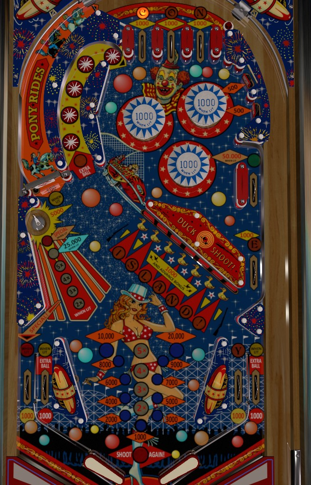

This game has very similar rules to Sharpshooter (Game Plan, 1979). It also has a very similar layout to Andromeda (Game Plan, 1985). Make sure you weren't thinking of one of those tables instead.
Bonus multiplier and lit star rollovers carry from ball to ball, so steps 1 and 2 only need to be done once per game. Spinner lights when bonus X is 2 or higher. ISLAND! targets aren't worth the trouble- never use the left flipper for anything other than transferring the ball to the right.
The letters in CONEY can be collected from the three top lanes, the middle right side lane, and the right in lane. Lanes always score 1,000 points; rolling through an unlit lane lights that letter and scores a bonus advance. Collecting a CONEY letter for the first time lights one of the rollovers in the star lane next to the spinner for 1,000 points and a bonus advance. Spelling CONEY advances the bonus multiplier, unlights the CONEY letters, and lights an extra ball that alternates between the star lane, the left in lane, and the right out lane based on various switch hits.
Each target down in the 7-bank of drop targets scores 1,000 points and a bonus advance. Completing the bank advances the bonus multiplier and resets the bank. There is no reason to shoot these drop targets: the same or better rewards can be obtained with other, more controllable shots around the playfield.
Score 100 points, or 1,000 when lit. Once a bumper is lit, it stays lit for the rest of the game. There are two standup targets in the upper right that score 500 points and require pop bumper luck or nudging to hit: the upper of these two targets lights the left and bottom bumpers, while the lower of the two targets lights the right bumper.
Requiring even more pop bumper luck is a lane that is always lit green for 50,000 points almost directly to the right of the lower bumper. This is a great boon fi you can get it, but is almost impossible to collect on purpose.
Each star rollover in this lane scores 100 points when not lit, or 1,000 points plus a bonus advance when lit. Lighting a unique CONEY letter for the first time lights a star rollover. Once a star rollover is lit, it stays lit for the rest of the game. Lighting 3+ star rollovers in this lane makes the star lane the best way to build your end of ball bonus. The final star rollover in this lane increases the multiplier on the left saucer's value, whether the star itself is lit or not.
Each shot to this saucer advances the bonus multiplier and scores 5,000 points times the saucer multiplier, which is raised by the final star rollover in the star lane, up to a maximum of 25,000 points. If CONEY or ISLAND! is completed when the bonus multiplier is already maxed out at 5x, this saucer and the left out lane will be lit alternately for a special for the rest of that ball. Once the special is collected, the saucer is worth a flat 25,000 points for the rest of that ball, no matter what the saucer multiplier was advanced to. This saucer is the most efficient way to earn bonus multipliers, and since multipliers always carry from ball to ball, it's the most important shot on the table early in a game.
Scores 100 points per spin, or 1,000 when lit. The spinner is lit whenever the bonus multiplier is 2x or higher. A shot to the spinner that feeds the pop bumpers, especially if the bumpers are lit, is the best way to score points on Old Coney Island! once the base bonus and bonus multiplier are maxed out.
Old Coney Island! has a conventional in/out lane setup. The right in lane awards the Y in CONEY. The left in lane and right out lane are occasionally lit for extra ball once CONEY has been spelled. The left out lane is occasionally lit for Special by spelling CONEY or ISLAND! after the bonus multiplier was already maxed out at 5x.
Bonus is advanced by shooting an unlit CONEY lane, any ISLAND! drop target, or any lit star rollover in the star lane. Bonus multiplier is advanced by spelling CONEY, spelling ISLAND!, or shooting the left saucer. Max bonus is 5x 29,000 = 145,000 points. Bonus multiplier is always carried from ball to ball, but base bonus is always reset. There is no mid-ball bonus collect.
Special can be set to award an extra ball, but there is a max of one extra ball per ball in play. It does not seem to be possible to set special and extra ball to score points instead.